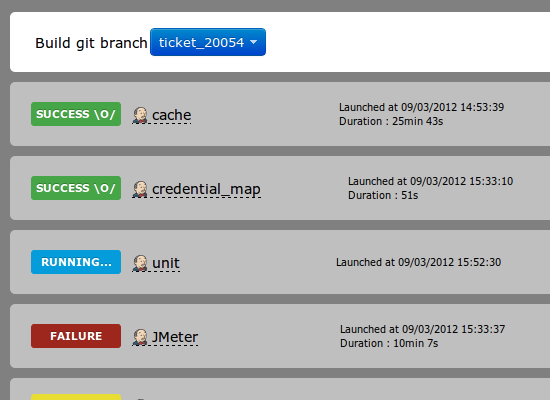
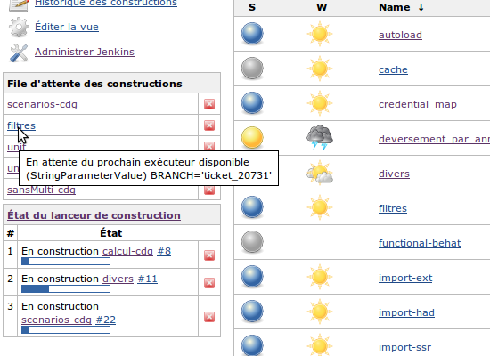

With Jenkins Khan you can easily launch different jobs on your working branches and check the result of each job grouped by your branches.
If you’ve ever tried to use Jenkins with feature branches, you know that’s not the right tool for this situation. It's kind of a mess to check your jobs state on every branch. We need an overview. Jenkins Khan is a tool over Jenkins to ease the testing of you feature branches.
Jenkins Khan uses Jenkins' API to retrieve the configuration, jobs, jobs parameters, views, statuses, etc. You just have to register your Jenkins URL in Jenkins Khan and enjoy the fun.
Jenkins Khan is a standalone LAMP project.
It is based on common web technologies:
Jenkins Khan is an open-source project.
It is published under MIT license.
Here, at PMSIpilot, when we have to work on a feature, the workflow is this one:
Because we have a lot of tests suites, we don't launch all of them on each feature branch. So, we choose the most relevant jobs, launch them and start working on another feature while tests are running.
Having a simple view displaying which jobs have been launched branch by branch, and the statuses of these feature branches, is important to us.
| Jenkins Khan | Jenkins CI |
|---|---|
|  |  |
|
|
Documentation is hosted in the project wiki on Github:
Get the source code on GitHub and use pull requests to improve it.
Jenkins Khan is an open-source side project of PMSIpilot, developped by:
Thanks to the PMSIpilot team for their suggestions and support. Jenkins Khan
Jenkins Khan